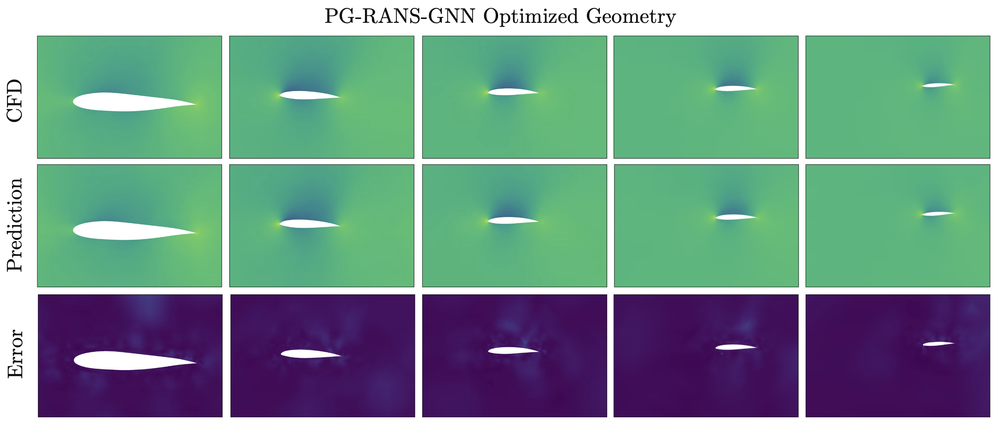

We apply large-scale multidisciplinary design optimization (MDO) to blended-wing-body aircraft. Limited historical sizing data makes physics-based analysis particularly valuable for these configurations, where the lifting body must satisfy aerodynamic, structural, stability, and payload requirements together.
Assessing designs across operating conditions
Panel aerodynamics and shell structures support a series of multipoint design problems with different trim and static-margin requirements. The study demonstrates an integrated conceptual-design workflow across nine range-payload conditions, extending design assessment beyond a single aerodynamic operating point.
Paper: Scotzniovsky et al. [1]
Making payload accommodation explicit
A separate packaging study shows why sufficient internal volume alone does not ensure that cargo fits. Signed-distance non-interference constraints keep specified payloads inside the surrounding aircraft geometry; the formulation below summarizes the multi-point BWB MDO demonstration.
Paper: Fletcher et al. [2]



Optimization problem
| Formulation element | P0 — baseline | P1 — planform, no trim | P2 — planform, trim | P3 — stability, 0% static margin | P4 — stability, 3% static margin | P5 — stability, 5% static margin |
|---|---|---|---|---|---|---|
| Case | Multi-point BWB MDO demonstration | |||||
| Objective | Minimize weighted fuel burn. | Minimize weighted fuel burn. | Minimize weighted fuel burn. | Minimize weighted fuel burn. | Minimize weighted fuel burn. | Minimize weighted fuel burn. |
| Design variables | ||||||
| Pitch angle | 11 | 11 | 11 | 11 | 11 | 11 |
| Shell thickness coefficients | 16 | 16 | 16 | 16 | 16 | 16 |
| Wing twist distribution | — | 4 | 4 | 4 | 4 | 4 |
| Chord distribution | — | 7 | 7 | 7 | 7 | 7 |
| Sectional spans | — | 3 | 3 | 3 | 3 | 3 |
| Wing sweep | — | 1 | 1 | 1 | 1 | 1 |
| Centerbody reflex angle | — | — | 1 | 1 | 1 | 1 |
| Engine chord placement | — | — | — | 1 | 1 | 1 |
| Total design variables | 27 | 42 | 43 | 44 | 44 | 44 |
| Constraints | ||||||
| Force balance | 11 | 11 | 11 | 11 | 11 | 11 |
| Maximum stress | 2 | 2 | 2 | 2 | 2 | 2 |
| Centerbody and fuel volume | — | 2 | 2 | 2 | 2 | 2 |
| Takeoff and landing length | — | 2 | 2 | 2 | 2 | 2 |
| Centerbody trailing-edge sweep | — | 1 | 1 | 1 | 1 | 1 |
| Engine collision spacing | — | 1 | 1 | 1 | 1 | 1 |
| Nominal moment trim | — | — | 1 | 1 | 1 | 1 |
| Nominal static margin | — | — | — | 1 | 1 | 1 |
| Total constraints | 13 | 19 | 20 | 21 | 21 | 21 |
| Models and conditions | Mid-fidelity panel aerodynamics, shell structures, and empirical performance models across nine cruise missions and two maneuver conditions. | |||||
| Representative source | Large-Scale Multidisciplinary Design Optimization of a Blended Wing Body Aircraft Using Mid-Fidelity, Multi-Point Analysis | |||||
| Source locator | Tables 3–4, pages 10–11. | |||||
References
- Luca Scotzniovsky, Nicholas C. Orndorff, Andrew H. Fletcher, Jason Kao, John T. Hwang. Large-Scale Multidisciplinary Design Optimization of a Blended Wing Body Aircraft Using Mid-Fidelity, Multi-Point Analysis. AIAA AVIATION 2026 Forum, 2026. Distribution Statement A: Approved for public release; distribution is unlimited. PA# AFRL-2026-2042DOIPDF
@inproceedings{scotzniovsky2026large, author = {Luca Scotzniovsky and Nicholas C. Orndorff and Andrew H. Fletcher and Jason Kao and John T. Hwang}, title = {Large-Scale Multidisciplinary Design Optimization of a Blended Wing Body Aircraft Using Mid-Fidelity, Multi-Point Analysis}, booktitle = {AIAA AVIATION 2026 Forum}, year = {2026}, doi = {10.2514/6.2026-4247}, url = {https://doi.org/10.2514/6.2026-4247}, note = {Metadata verification: Crossref title} } - Andrew H. Fletcher, Hollis A. Smith, John T. Hwang. Efficient and Robust Enforcement of Geometric Non-Interference Constraints for Large-Scale Multidisciplinary Design Optimization. AIAA AVIATION 2026 Forum, AIAA 2026-4501 (AFRL public release), 2026. Distribution Statement A: Approved for public release; distribution is unlimited. PA# AFRL-2026-2044PDF
@inproceedings{fletcher2026efficient, author = {Andrew H. Fletcher and Hollis A. Smith and John T. Hwang}, title = {Efficient and Robust Enforcement of Geometric Non-Interference Constraints for Large-Scale Multidisciplinary Design Optimization}, booktitle = {AIAA AVIATION 2026 Forum, AIAA 2026-4501 (AFRL public release)}, year = {2026}, note = {Metadata verification: Crossref unavailable: HTTPError} } - Mark Sperry, John T. Hwang. Multifidelity Surrogate Modeling for 3D Aerodynamic Flow Field Prediction Using Graph Neural Networks. AIAA AVIATION 2026 Forum, 2026. Distribution Statement A: Approved for public release; distribution is unlimited. PA# AFRL-2026-2231DOIPDF
@inproceedings{sperry2026multifidelity, author = {Mark Sperry and John T. Hwang}, title = {Multifidelity Surrogate Modeling for 3D Aerodynamic Flow Field Prediction Using Graph Neural Networks}, booktitle = {AIAA AVIATION 2026 Forum}, year = {2026}, doi = {10.2514/6.2026-4802}, url = {https://doi.org/10.2514/6.2026-4802}, note = {Metadata verification: Crossref title} } - Luca Scotzniovsky, John T. Hwang. A Fast, Memory-Efficient Panel Method for Large-Scale Multidisciplinary Design Optimization Under Uncertainty Using Graph-Based Modeling. AIAA AVIATION 2025 Forum, 2025.PDF
@inproceedings{scotzniovsky2025fast, author = {Luca Scotzniovsky and John T. Hwang}, title = {A Fast, Memory-Efficient Panel Method for Large-Scale Multidisciplinary Design Optimization Under Uncertainty Using Graph-Based Modeling}, booktitle = {AIAA AVIATION 2025 Forum}, year = {2025} }
Research connections